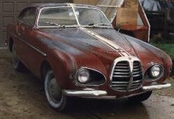
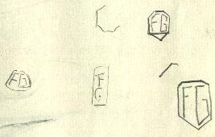
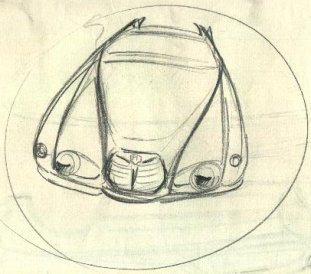
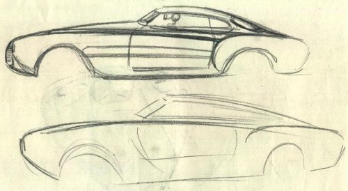
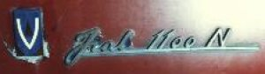
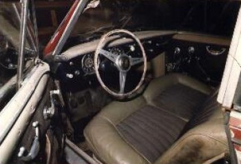

Carrozzeria Vignale · Fiat
1953 Vignale Fiat 1100
Sketches by Michelotti




Owned by: Mike Malone
In 1984, I bought a Vignale Fiat. The car was last driven in 1967, and according to the people I bought it from, it was being driven from California to Seattle, when it blew a piston while passing through Salem, Oregon. It has never been restored since the engine problem in 1967. The person who owned it when the piston blew claimed to be in the movie industry, and said the car had been in a movie. The elderly people I bought the car from could not remember clearly, but they thought the car had been in either an Alan Ladd or Kirk Douglas movie.

I did some research after buying the car in 1984, and it from the fire wall plate, my research indicated that the car was made in 1953. That’s about all I know about it, and I have kept it in storage since I bought it in 1984. Also, it appears that the original color of the car was a dark blue as evidenced by the color under the peeling red paint, and inside the door openings.

Sketches by Michelotti
Following note regarding the drawings was made by Edgardo Michelotti, Giovanni’s son, when he came over to England with his photographer Brambillo. Whilst taking a batch of photos of the sketches he mentioned that although many of the drawings were unsigned they were definitely done by his father and not another… often when completing a sketch he would simply draw a circle around it.
One of them has the emblem “FG”, but the significance remains unknown.
Eventually, Mike would like to totally restore the car to its original condition, but he does not want to begin until he has fully researched the car. It is his desire to hear from anyone who can give information on this car and its history.
Mike Malone